LLM with code & reasoning capabilities
A code-based simulator that encodes domain knowledge
The world model defines a generative process $p(S)$. Sample candidate hypotheses to form a hypothesis space.
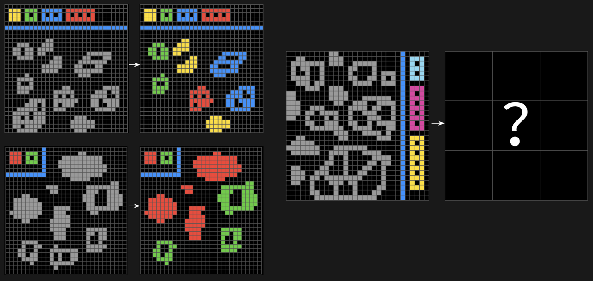
ARC-AGI 2 (Chollet et al., 2025): Inspiration for a challenging domain with a minimal state representation
Our contribution: a two-player synchronous task
Sees partial board
Asks questions & shoots
Sees full board
Answers Yes or No
Key idea: The Spotter acts as an experiment oracle — providing instant, automated feedback about experiment outcomes.
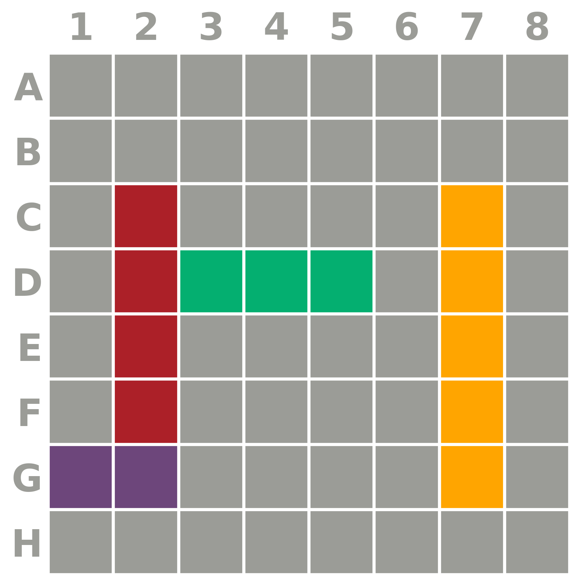
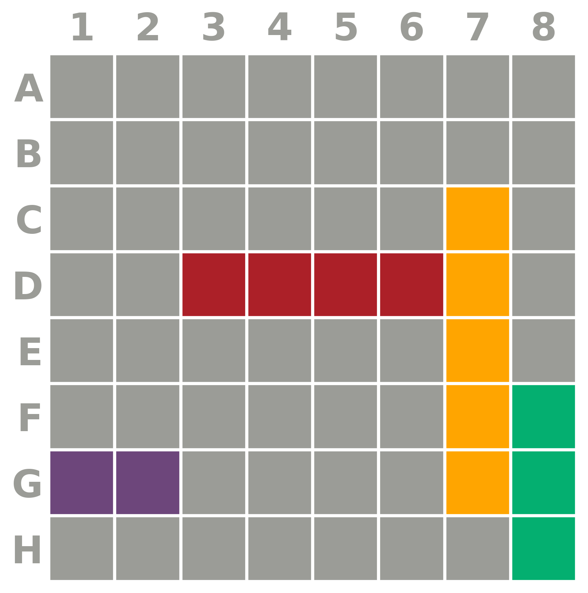
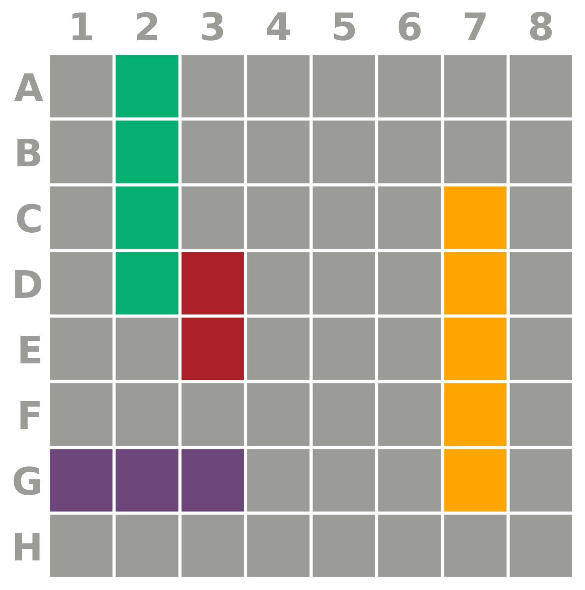
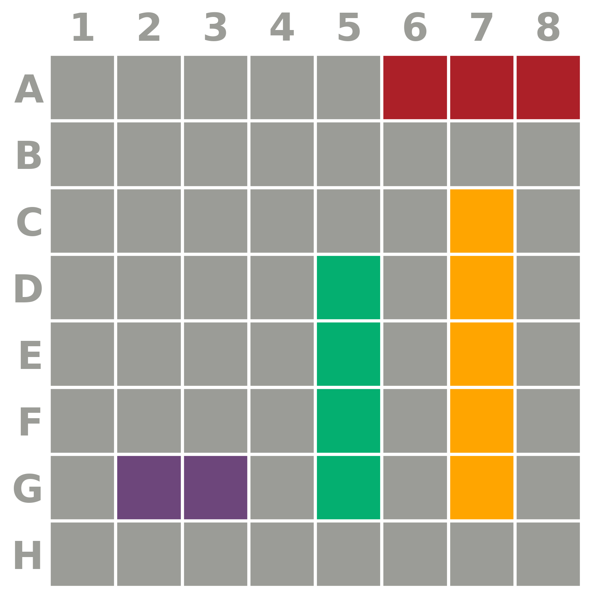
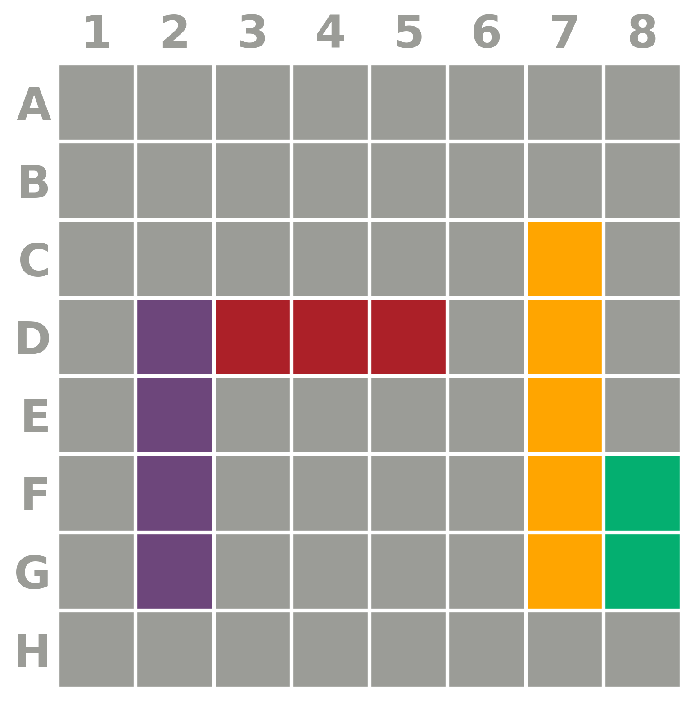
EIG lets us formalize key behavioral questions about humans and AI agents
Do agents and humans ask informative questions? Do they provide accurate answers?
Do they make targeted guesses under uncertainty, integrating information from answers?
Do they make effective use of available questions under a limited resource budget?
Characterizing human information-seeking
People are not optimal, but resource-rational: they rarely ask redundant questions, performance scales with QA frequency, and answers are highly accurate.
Interacting with a world model…
42 participants · 126 games · 931 gold-labeled questions (BattleshipQA dataset)
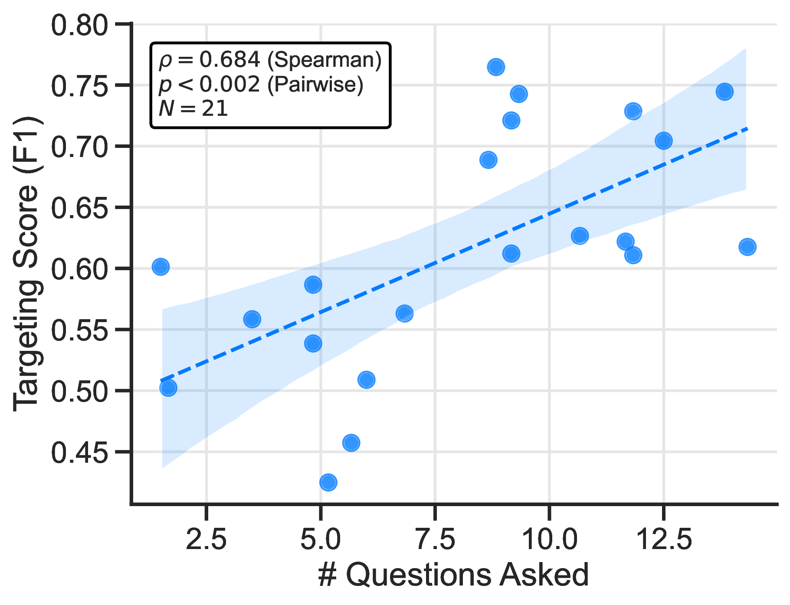
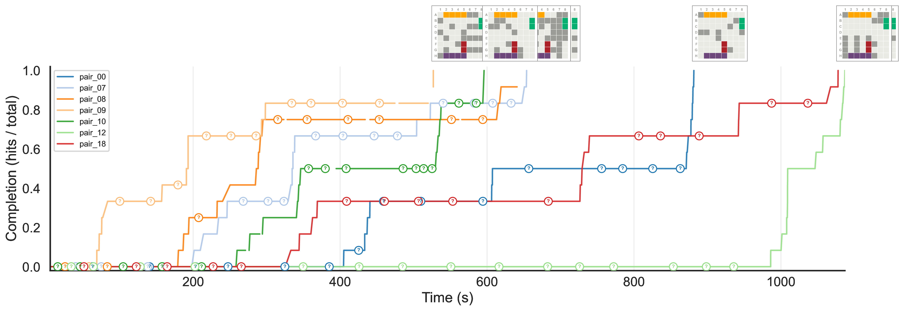
Human accuracy: Spotters answer questions correctly 92.5% of the time w.r.t. gold labels.
→ Can LMs match this?
Interacting with a world model
SpotterQA: 15 LMs × 931 gold-labeled questions · 2×2 design: language vs. code × direct vs. CoT
Does using a world model improve downstream performance?
→ Targeting Score (F1) measures hits vs. misses as a binary classification task
Just optimizing EIG (InfoMax) does not help
→ Weaker models (Llama 4, GPT-4o) don’t know how to act on information gained
Using the world model to select when and where to shoot:
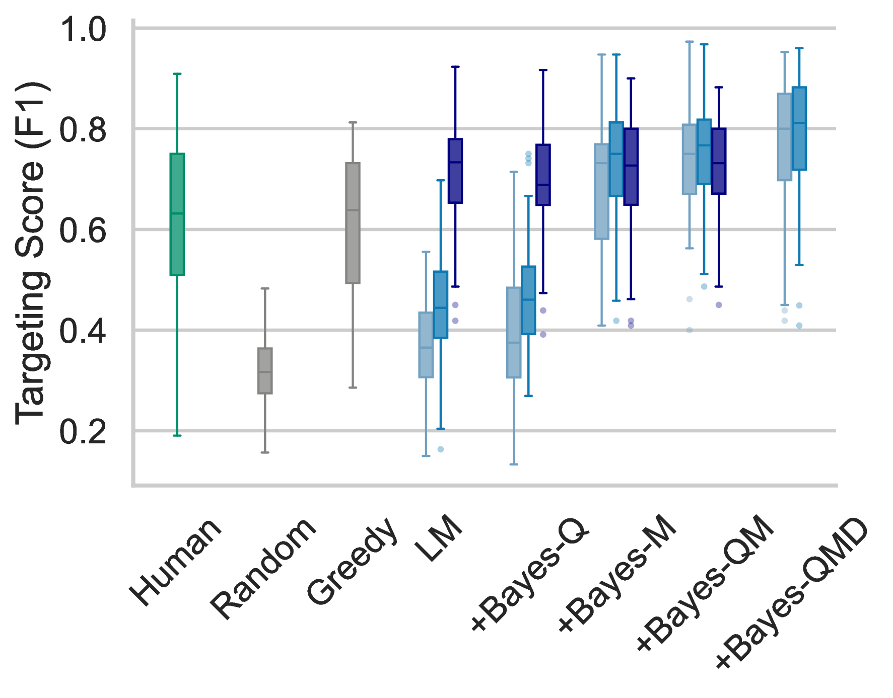
Llama-4-Scout + Bayesian strategies:
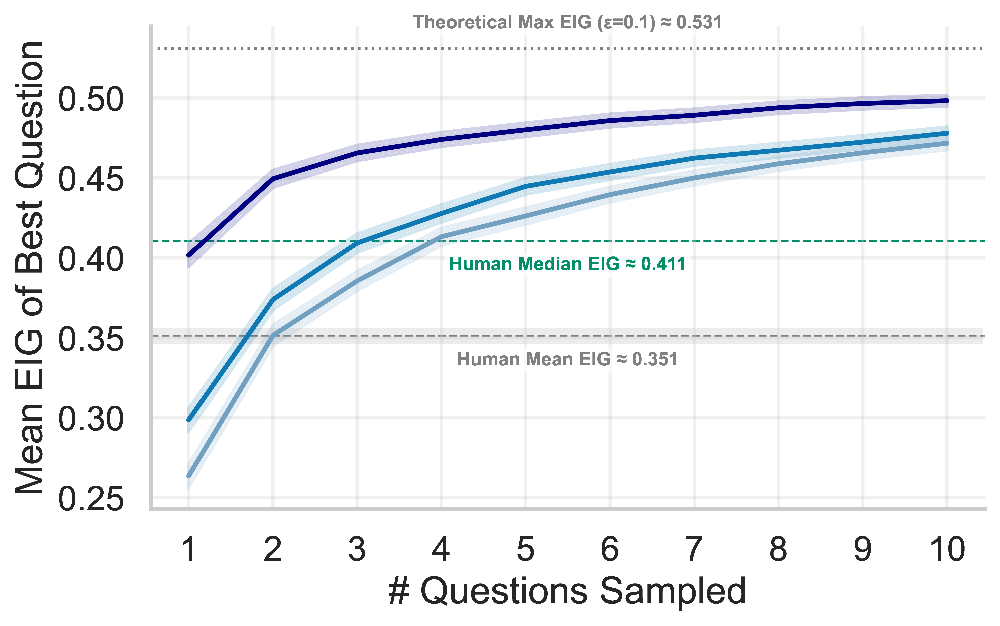
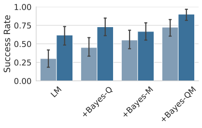
Good performance on controlled tasks like Battleship is a prerequisite for real-world discovery. If an agent can't explore rationally here, we shouldn't trust it in the clinic or the lab.
In science and medicine, we need to define and measure what rational exploration looks like. Environments like this let us compare LM behavior against human and ideal Bayesian baselines.
Our symbolic world model is an interactive simulator: the agent tests hypotheses by running programs against sampled possible worlds. This connects to sandboxed coding environments, dynamic world models (e.g., Genie), and other forms of thinking before acting.
The same principles — asking informative questions, acting on evidence, balancing exploration and exploitation — apply to agentic coding, medical diagnosis, scientific discovery, and beyond.
Code, data, and interactive demos
ARC-AGI 2, Chollet et al., 2025
Key extensions over prior work (Rothe et al., 2017; 2018; 2019; Grand et al., 2024)
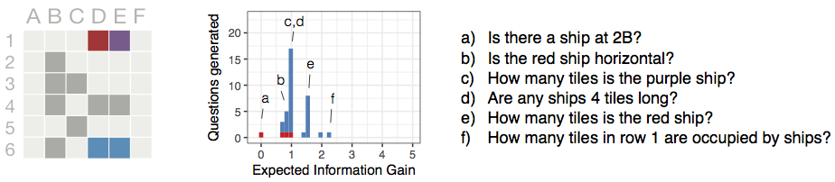
Prior work: single-turn, single-player
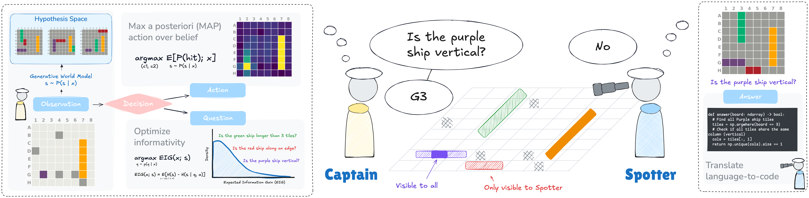
Our work: multi-turn, two-player dialogue
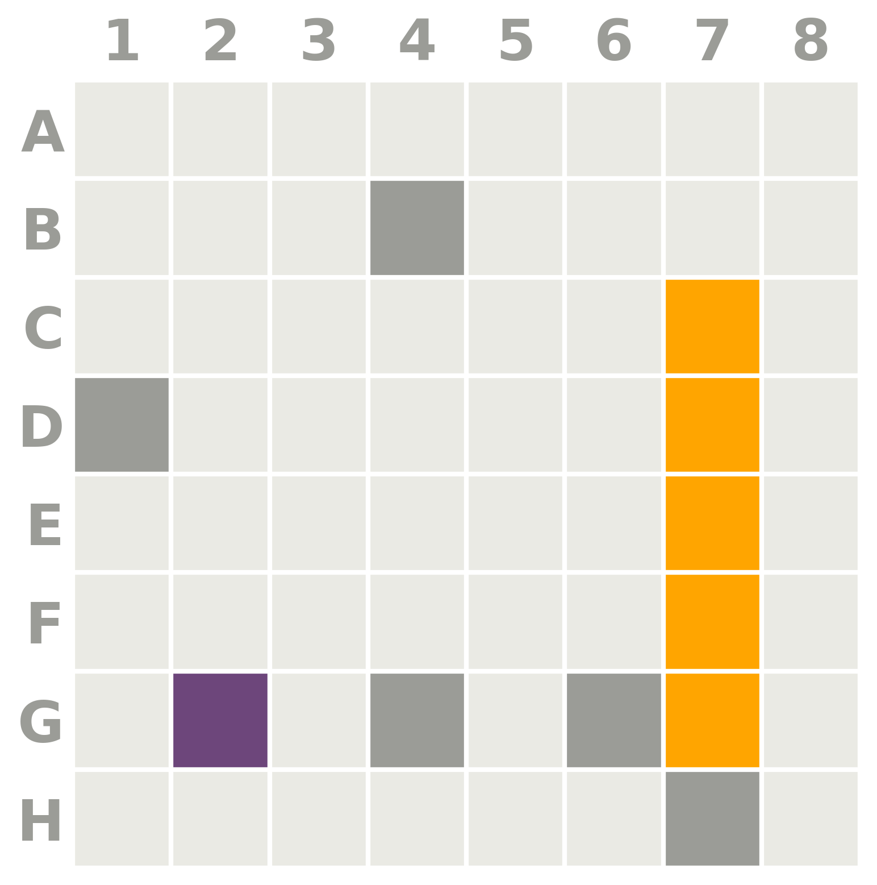
Key idea: Translating to code grounds the answer in the actual board state, avoiding hallucination and misinterpretation.
def answer(true_board, partial_board) -> bool:
# Columns 1-4 = zero-based indices 0-3
max_allowed_col = 3
ship_ids = [s for s in np.unique(true_board) if s > 0]
count_within = 0
for sid in ship_ids:
cols = np.where(true_board == sid)[1]
if cols.size > 0 and cols.max() <= max_allowed_col:
count_within += 1
return count_within >= 2
# >>> answer(true_board, partial_board)
# True
Sample plausible boards consistent with observations, then marginalize to get a tile-level belief.
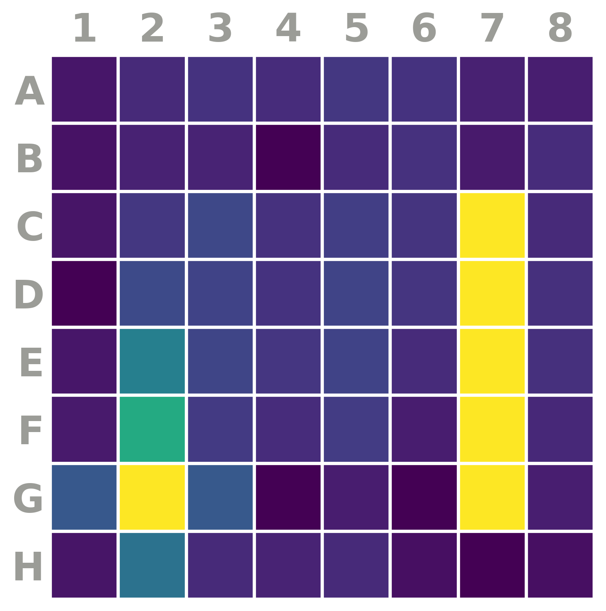